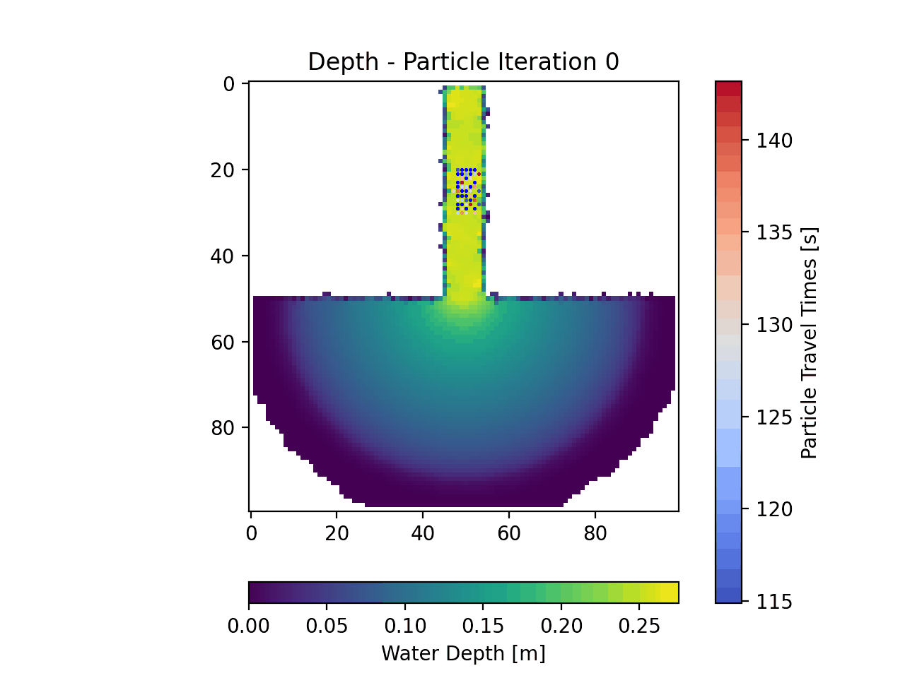

Example 5 - Visualizing Particle Travel Times¶
In this example we will revisit the ANUGA model output we looked at in Example 1 - Particles in Steady Flow (ANUGA). This time, however, we will be visualizing the particle travel times in addition to their position.
Full example script available here.
After loading the data and establishing the parameters and the particles in the same way we did in Example 1 - Particles in Steady Flow (ANUGA), we will invoke the time_plots method from the routines.py code.
>>> time_plots(particles, 50, 'timing_anuga_example')
In the animation the actual particle travel times are tough to see as the colorbar limits continually update, however if you run this script, you can look at the individual frames in the ‘timing_anuga_example/figs’ folder that will be created. The general idea is that the red particles have traveled for a longer time than the blue ones.
